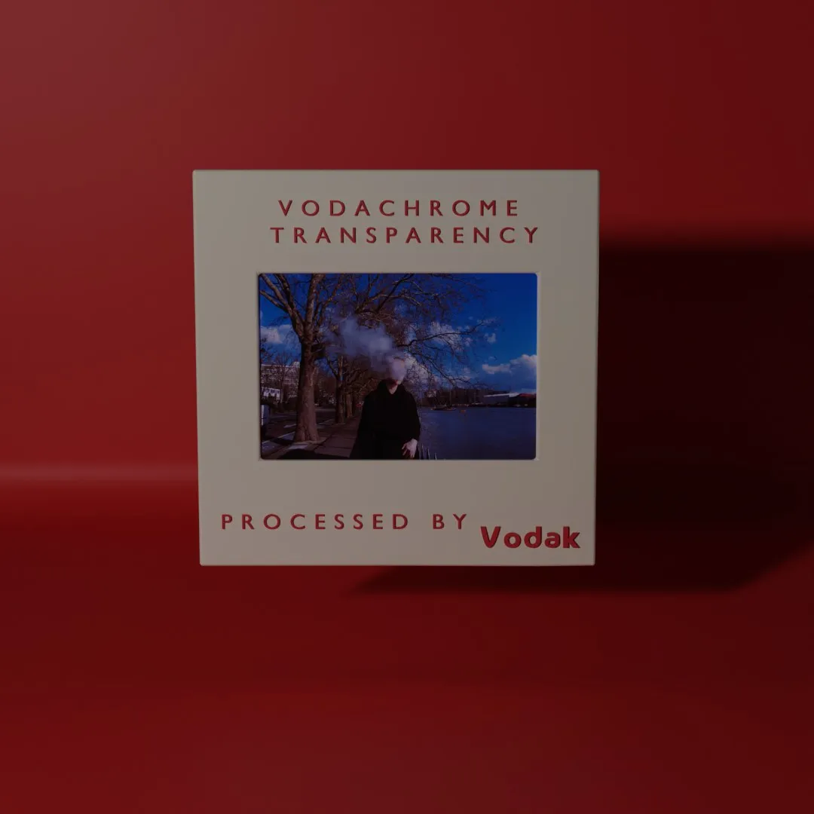
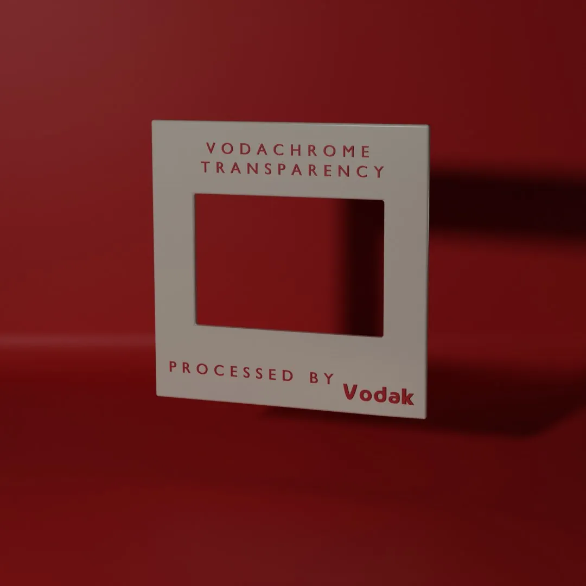
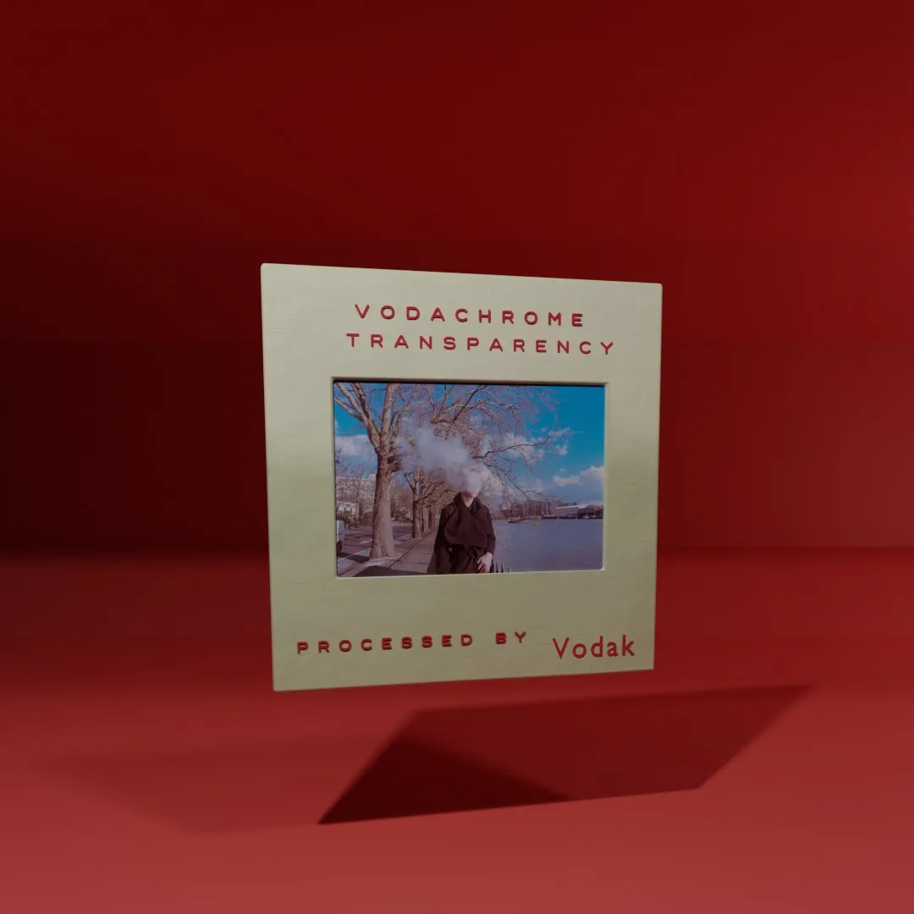

00:00:05:00Arte · 3D / Colección NFT
Analog meets pixels
Renders 3D de diapositivas Kodak clásicas, cada una con una fotografía mía — lo analógico y lo digital en un mismo objeto.
- Categoría
- 3D / Colección NFT
- Año
- 2023
- Herramientas
- 3D modeling, Photography
En este proyecto en curso busco explorar el cruce entre lo analógico y lo digital en el mundo emergente de los NFT. Con una serie de piezas, cada una con el render 3D de una diapositiva clásica, quiero rendir homenaje a la historia de la fotografía analógica y, al mismo tiempo, empujar los límites del arte digital.
Cada diapositiva, modelada a partir de las clásicas Kodak de los proyectores de antes, funciona como un portal a un mundo de colores intensos, texturas y imágenes que invitan a pensar. Dentro de cada una coloqué una fotografía tomada por mí, para que lo físico y lo digital se encuentren en un mismo objeto.
Es un proyecto abierto: cada pieza nueva es un paso más en esa exploración entre lo analógico y lo digital, y una conversación sobre el lugar de la tecnología en el arte.



Siguiente en Arte3D / Diseño industrial
Estudio de la silla Søborg →